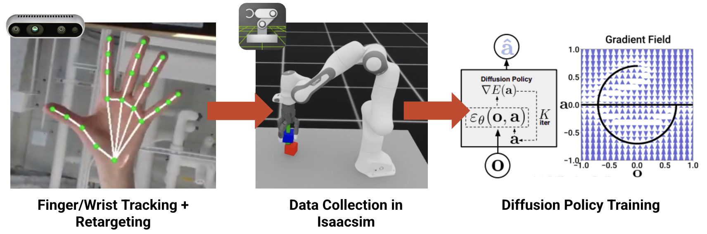

StackBot: Diffusion Pipeline for Stacking Blocks
Abstract
We present a teleoperation-based data collection and imitation learning pipeline for the Tesollo DG-3F three-finger gripper mounted on a Franka Panda robotic arm. Using this pipeline, we collect a dataset of cube-stacking demonstrations in which the robot must grasp a cube, lift it, and precisely place it atop a second cube. We then train a Diffusion Policy model on the collected demonstrations. Our experiments show that the learned policy successfully generalizes cube-stacking behavior from a modest number of human demonstrations, validating both the expressiveness of Diffusion Policy for dexterous manipulation and the practicality of our teleoperation pipeline for real-robot data collection with multi-fingered end effectors.
Introduction
Diffusion policies have recently shown strong performance in visuomotor control, particularly in dexterous manipulation tasks. These methods enable robots to learn complex, multimodal behaviors directly from data, without requiring explicit modeling of system dynamics. A common approach to collecting such data is through human teleoperation, which provides an intuitive and scalable way to generate demonstrations for robot learning. By allowing operators to directly control the robot, teleoperation captures rich task-relevant behaviors that can be used to train policies. Our research questions are presented below:
RQ1. How can we adapt a diffusion policy architecture to support the control of a bimanual robot system with 3-finger dexterous robot grippers?
RQ2. How can we design a teleoperation system to collect high-quality dexterous demonstration data?
Diffusion Policy Pipeline

Our Diffusion Policy pipeline includes three stages. The first being wrist and finger tracking which is retargeted into robot arm end-effector pose and gripper joint positions. This is used to teleoperate the robot in simulation and collect data of stacking blocks. This data is then used to train a low-dimension diffusion policy.
Stage 1: Finger & Wrist Tracking
To track the wrist and finger position, we use the MediaPipe Hand Tracking Dex Retargeting from the AnyTeleop Project [1]. We use a RGB-depth camera (Realsense d435) to localize the wrist relative to the camera frame using the depth data. The wrist pose is scaled up linearly into the robot end-effector pose so that the robot can reach the entire workspace. We also add a One Euro Filter [3] (a special type of low pass filter with reduced lag) to smooth the wrist data since the tracking model is a bit jittery.
Adapted Hand Retargeting
Finger mapping: thumb, index, middle finger --> 3-finger gripper.
Wrist mapping: human wrist height and depth --> robot arm end effector position.
Stage 2: Teleoperation & Data Collection
TODO
Teleoperation Demonstration
Add green arrow at the gripper palm for better alignment.
Stage 3: Diffusion Policy Training
We adapt the Diffusion Policy architecture from its original MuJoCo-based implementation to the Isaac Sim simulation platform. To accommodate the dexterous gripper, we expand the action space from the baseline to 18 dimensions, adding 12 degrees of freedom to capture the full articulation of the hand's fingers. The observation space consists of 19-dimensional low-level proprioceptive states, providing the policy with compact but informative sensory input. We retain the CNN-based U-Net denoising backbone from the original architecture, which iteratively refines noisy action sequences into coherent motor commands through the diffusion process.
Experiments
Experiment 1: Block Stacking, Fixed Location
Success (60 demonstrations)
Experiment 2: Block Stacking, Uniform Shape, Random Locations
Success (66 demonstrations with constrained block randomization)
Conclusion
While our current implementation demonstrates promising results, several limitations point to clear directions for future work.
- Observations: The policy presently relies on low-dimensional proprioceptive observations, which limits its applicability to real-world scenarios where object states cannot be directly measured; transitioning to image-based observations would enable more generalizable and deployment-ready perception.
- Deployment: The system has only been validated in simulation, and bridging the sim-to-real gap to deploy on a physical robot remains a critical next step.
- Hardware: The current single-arm setup constrains the complexity of manipulation tasks that can be performed, and extending the system to a bimanual coordination framework would substantially broaden its capabilities.
- Task: The task scope is presently limited to relatively simple cube stacking; scaling to a more diverse repertoire of dexterous manipulation tasks — such as in-hand reorientation, tool use, or deformable object handling — will be essential for demonstrating the full potential of the approach.
References
Our implementation builds upon the following open-source repositories: